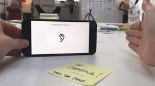

Career Profile
I don't believe in right/left brain dominance. I try and balance my mathematical and analytical mind with my creative and musical mind — tying together my Bachelor's degree in Theoretical Physics and Master's degree in Music & Media Technologies from Trinity College Dublin.
Currently I am working as a creative software developer for MOBGEN:Lab, part of Accenture Digital. The role involves a large range of technologies from web, mobile, voice and VR. My specific focus is on Javascript and iOS/Swift development. But I also have strong proficiency with Python, C++ and Java.
I pride myself in quickly understanding complex new topics. Once you have understood and mastered Quantum Field Theory, everything else seems easier! Moving forward with my career I would like to continue improving my technical skills and contribute to something meaningful.
Experiences
My role here involves work on MVP innovation projects for clients. A client such as Shell or Heineken will visit MOBGEN:Lab in search of a short six week development sprint to deliver a working concept.
The role also involves internal research projects. Such as an iOS research project to use ultrasonic audio as an interface for iPhone. Also an internal data visualisation dashboard which visualizes data from Twitter.
Undertook a Master's Degree in Music and Media Technology from Trinity College Dublin. The course content consisted of an intersection of audio, music and software. Modules ranged from composition, sound engineering to programming in Java, C++ and Javascript.
For my Master’s thesis project a web audio application was developed to generate music from detected particles in a cloud chamber. The project combines computer vision technology, web audio & composition. Website can be found at - https://tothepoweroftom.github.io/musicfromtheatom
Worked as Lead Developer and Co-Founder for Composure, an audio technology startup based in Trinity College Dublin's Launchbox startup incubator.
The project concentrated on the transcription of guitar audio into guitar tablature. The algorithm we developed transcribed live guitar playing into musical notation based on an understanding of the physics of a vibrating string. Relevant digital signal processing techniques were first explored in Python, C++ and Matlab.
As part of the incubator my co-founder and worked on a iOS/Mac OS app to bring our research to a commercial product. Though we delivered a working prototype, our endeavour was unsuccessful in gaining traction with investors. After a years valuable experience we decided to part ways and try other things.
Projects
A selection of some of the strange and wonderful side projects I've been involved in.